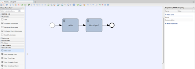

BPMN2 Authoring in Drools Guvnor
Drools Guvnor supports editable BPMN2 process in the browser via Oryx. Oryx is a web-based editor for modeling business processes hosted at Google Code. Oryx is also backed by Signavio, who provide a professionally maintained version of Oryx.
Drools Flow is integrated with the BPMN2 process designer provided from the Oryx branch maintained by Antoine Toulme. This branch is maintained with the goal to apply upstream patches to the Oryx project. The latest version of the designer can be downloaded from github here.
This integration also includes synchronization of .bpmn artifacts created in the designer with Eclipse, allowing BPMN2 round-trip authoring between Eclipse and Drools Guvnor. You can watch the video that Kris created showing this action here.
How to use the designer:
a) Download the designer.war from here and unzip it into $jboss_home/server/$config/deploy directory.
b) Start up your server instance.
c) Navigate to http://localhost:8080/designer/editor
You should be now able to create your process and save it (or view the produced BPMN2 XML and paste it into a .bpmn file locally). 
BPMN2 being edited in Oryx designer
Open this file in Eclipse and use the Drools Guvnor Perspective to upload it to your Drools Guvnor repository as shown in the video.
Now open the process in Drools Guvnor and you should see the same process designer. Note that Oryx still uses the BPMN2 beta1 format, so you should make sure you are using that version and not the latest (or Oryx will not be able to parse your input).
BPMN2 being edited in web based Guvnor
Remarks:
Oryx currently requires Java6
Oryx currently requires Mozilla Firefox
Deploy the designer.war onto the same AS instance and configuration alongside drools-guvnor.war
We are working on updating the Oryx designer.war to the latest BPMN2 version (which Drools already supports) so check this blog and the mentioned download link for latest updates. These updates will happen independently from Drools releases.

{kind=link}
{kind=link}
{kind=link}